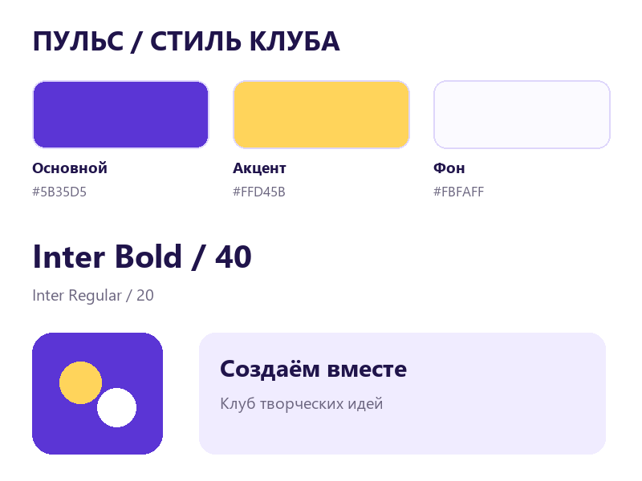
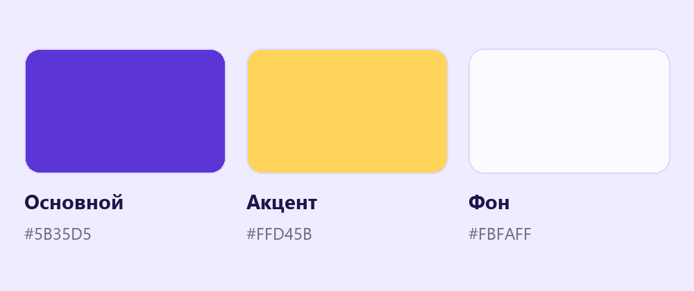

Единый стиль проекта
Придумай оформление нового клуба: выбери палитру и текстовые роли, затем примени их к двум небольшим работам.
Перейти к заданию ↗
Перед новой практикой
Три небольших вопроса по предыдущему уроку. Выбери ответ и нажми «Проверить».
Клавиши для практики
Сочетания для Windows. Переключи клавиатуру на английскую раскладку. Перед командой заверши ввод текста.
Одно настроение
Новый проект можно назвать «Пульс» или придумать своё название. Выбери одну тему: творчество, игры, книги или наука. Определи три слова о его характере. Например: энергичный, ясный, дружелюбный. Эти слова помогут выбирать цвета и формы.

У клуба «Пульс» повторяются фиолетовый, светлый фон и скруглённые формы.
Попробуй в Figma
Повторяемые цвета
Цветовой стиль сохраняет заливку под понятным названием. Выдели фигуру с нужным Fill, открой выбор стилей рядом с Fill и создай стиль кнопкой плюс. Назови его «Клуб / Основной». Для применения выбери другую фигуру и тот же стиль. Достаточно трёх цветовых стилей.

Палитра задаёт роли: основной цвет, акцент и фон.
Попробуй в Figma
Идеи в кадре
Соберём идеи и превратим их в аккуратную творческую работу. У текста есть понятные роли и свободное место.
Нажми на варианты и сравни.
Повторяемые роли текста
Текстовый стиль хранит шрифт, размер, начертание и интервалы. Выдели настроенный текст, открой стили в Typography и создай новый. Назови роли «Клуб / Заголовок» и «Клуб / Текст». Цвет текста проверяй отдельно: он должен хорошо читаться на выбранном фоне.

У заголовка и обычного текста постоянные роли в разных работах.
Попробуй в Figma
Набор оформления клуба «Пульс»
Начни новый клуб или проект. На одном фрейме размести палитру, текстовые роли и два небольших носителя: значок клуба и карточку с приглашением. Готовое решение урока 4 использовать не требуется.
В Figma нажми на название файла и выбери Duplicate to drafts (создать копию в черновиках). Работай в собственной копии. Инструкции и образцы заблокированы.
Проверь свою работу
Отмечай пункты после проверки в Figma.
Если закончил раньше
Измени основной цвет через стиль. Проверь оба носителя и объясни, какие элементы обновились.